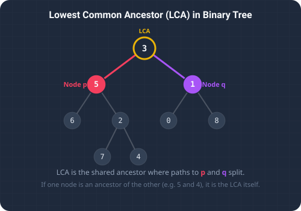

What We're Solving & Structural Splits
In computer science, identifying the convergence point of divergent branches is a classic problem with significant architectural applications. The Lowest Common Ancestor (LCA) of two nodes p and q in a binary tree is defined as the lowest (deepest) node in the tree that has both p and q as descendants. Under this definition, we permit a node to be a descendant of itself.
For example, in a tree with root 3, and child nodes p = 5 and q = 1, the LCA is the root 3 itself because both nodes split directly from it. If p = 5 and q = 4 (where 4 reports directly underneath 5), the LCA is 5 since 5 is a descendant of itself and sits above 4.
Understanding the LCA pattern is critical for solving structural and hierarchical issues in engineering:
- Relational Databases: Tracing nested folder paths or categorical hierarchies to locate shared directories.
- Organization Management Tools: Identifying shared decision-makers or common reporting line supervisors.
- Inheritance Mapping: Finding closest parent interfaces or classes in object-oriented compiler trees.

To visualize the Lowest Common Ancestor, imagine a company organizational chart:
- Shared Manager (Split Departments): Think of two employees, Alice (representing node
p) who works in Software Engineering, and Bob (representing nodeq) who works in Marketing. If you want to find their Lowest Common Ancestor, you trace their reporting lines up until they meet. Because their departments are completely separate, their nearest shared manager is the CEO at the top. - Direct Manager (Subordinate Relationship): Now, think of Alice as the VP of Engineering and Bob as a Senior Developer who reports directly to her. If you trace their lineage, Alice already sits above Bob, and since she has authority over herself as well, she is their nearest shared manager.
The Approach
Post-Order DFS Recursive Strategy (O(n) Time, O(h) Space)
We can solve this problem elegantly using a post-order Depth-First Search (DFS) traversal. The recursive logic works from the bottom up, evaluating subtrees and bubbling search states to parent frames:
- Base Case Check: If the current node is
null(empty leaf boundary), or matches eitherporq, we return the current node. This signal indicates we have either hit a dead end or found one of our target nodes. - Subtree Searches: We recursively search the left child (
left = lowestCommonAncestor(root.left, p, q)) and the right child (right = lowestCommonAncestor(root.right, p, q)). - Evaluating Convergence:
- Split Point: If both
leftandrightsearches return non-null results, it means one target node was found on the left branch and the other on the right branch. The current node is therefore the unique meeting point, so we return it. - Single Branch Matches: If only one of the subtree searches returns a non-null node, it means both targets reside along that path. We bubble that non-null node up to the parent.
- No Matches: If both search branches return
null, we returnnull.
- Split Point: If both
O(n) time complexity. The space complexity is O(h) due to the recursion call stack.
Detailed Trace Walkthrough
Let's trace this recursive algorithm on a simple binary tree where root 3 has left child 5 and right child 1. We seek the LCA of p = 5 and q = 1:
- Step 1 (Root Call): We invoke
lowestCommonAncestor(3, 5, 1).- Node
3is not null and matches neither5nor1. We must search both subtrees.
- Node
- Step 2 (Left Subtree Search): We invoke
lowestCommonAncestor(3.left, 5, 1)→lowestCommonAncestor(5, 5, 1).- The current node matches
p = 5, triggering our base case. The method immediately returns node5to the root caller.
- The current node matches
- Step 3 (Right Subtree Search): We invoke
lowestCommonAncestor(3.right, 5, 1)→lowestCommonAncestor(1, 5, 1).- The current node matches
q = 1, triggering our base case. The method immediately returns node1to the root caller.
- The current node matches
- Step 4 (Resolution at Root):
- We receive
left = 5andright = 1. - Since both variables are non-null, the split point condition matches:
if (left != null && right != null) return root;. - The root node
3is returned as the LCA.
- We receive
- Step 5 (Termination): The root frame completes execution, returning
3.
How the Code Works
The key highlights of our Java implementation:
if (root == null || root == p || root == q) return root;: The recursive base case. It stops the search and returns the node as soon as we find eitherporq, or hit a leaf.if (left != null && right != null) return root;: The core split condition. If both subtrees returned a match, the current node is the lowest common ancestor of the two targets.return left != null ? left : right;: If only one subtree returned a match, it means both nodes are on that side, so we bubble that match up.
Full Java Solution
Below is the complete Java implementation featuring the recursive DFS algorithm, along with a main runner method to trace the node values.
package io.practise.dsa;
public class LowestCommonAncestor {
public static class TreeNode {
public int val;
public TreeNode left, right;
public TreeNode(int val) { this.val = val; }
}
// Recursive DFS - O(n)
public TreeNode lowestCommonAncestor(TreeNode root, TreeNode p, TreeNode q) {
if (root == null || root == p || root == q) return root;
TreeNode left = lowestCommonAncestor(root.left, p, q);
TreeNode right = lowestCommonAncestor(root.right, p, q);
if (left != null && right != null) return root;
return (left != null) ? left : right;
}
public static void main(String[] args) {
LowestCommonAncestor solver = new LowestCommonAncestor();
TreeNode root = new TreeNode(3);
TreeNode p = new TreeNode(5);
TreeNode q = new TreeNode(1);
root.left = p;
root.right = q;
System.out.println("--- Lowest Common Ancestor Demonstration ---");
TreeNode lca = solver.lowestCommonAncestor(root, p, q);
System.out.println("LCA Val: " + lca.val);
}
}Conclusion & Takeaways
Solving the Lowest Common Ancestor (LCA) problem highlights how we can leverage key data structures and bottom-up recursive backtracking to partition comparative branches. By evaluating subproblem returns at each parent pivot, we convert a global search tree traversal into an elegant $O(n)$ comparative flow.